Proyecto Final
Infraestructura Tecnológica con Virtualización, Docker y Kubernetes
Curso: Sistemas Operativos 750001C
Docente: Mg. José Alexander Castañeda Muñoz
Semestre: 1 - 2026
Grupo: 4 integrantes
Valoración: 25 puntos (25%)
Estado: Completado
Videos Demostrativos
A continuación, los videos demostrativos de cada componente del proyecto:
Repositorio GitHub
Sitio Web
Equipo de Trabajo
Los siguientes integrantes participaron en el desarrollo del proyecto:
Componentes del Proyecto
Cada componente fue implementado y documentado según las especificaciones del proyecto.
Componente 1: Virtualización
CompletadoDescripción: Instalación de dos máquinas virtuales Linux en VirtualBox. Una con entorno gráfico (Ubuntu MATE 24.04) y otra de consola (Rocky Linux 9.8). Particionamiento manual y configuración de red/SSH.
VM Gráfica - Ubuntu MATE 24.04 LTS
Características:
- Sistema operativo con entorno de escritorio completo
- Particionamiento manual: / (20GB), swap (4GB), /home (43.62GB)
- IP: 192.168.50.20/24
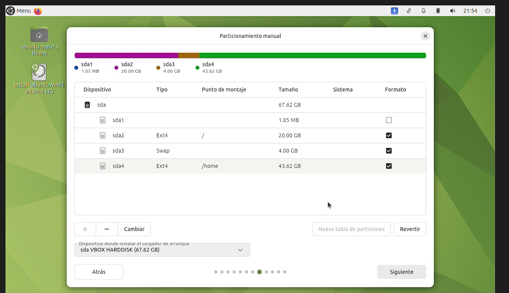
Particionamiento manual: / (20GB), swap (4GB), /home (43.62GB).
VM Consola - Rocky Linux 9.8
Características:
- Sistema operativo sin entorno gráfico (consola)
- Particionamiento manual: / (20GB), swap (2GB), /home (53.5GB)
- IP: 192.168.50.10/24 (configuración manual)
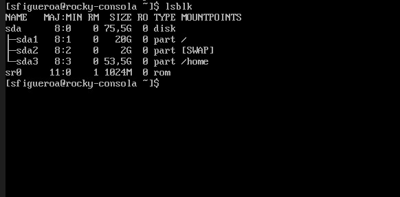
Particionamiento manual: / (20GB), swap (2GB), /home (53.5GB).
Configuración de Red
Configuración de red en ambas VMs:
- Modo de red: Adaptador puente
- VM Gráfica: 192.168.50.20/24
- VM Consola: 192.168.50.10/24 (configuración manual)
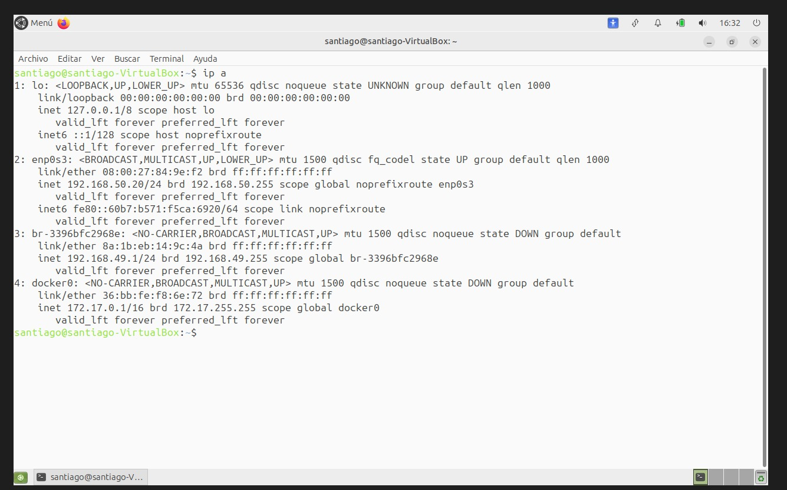
Interfaz enp0s3 con IP 192.168.50.20/24 en la VM Gráfica.
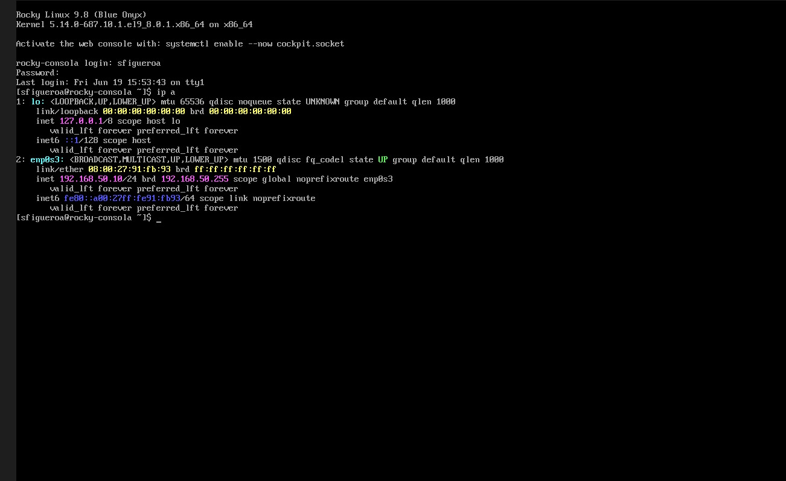
Interfaz enp0s3 con IP 192.168.50.10/24 en la VM Consola.
Prueba de Conectividad y SSH
Verificación de conectividad:
- Ping exitoso desde VM Gráfica a VM Consola
- 4 paquetes transmitidos, 0% pérdida
- Acceso SSH exitoso desde VM Gráfica a VM Consola
# Desde VM Gráfica a VM Consola
ping -c 4 192.168.50.10
# Acceso SSH
ssh sfigueroa@192.168.50.10
El comando ping verifica la conectividad de red, y ssh permite el acceso remoto a la VM Consola.
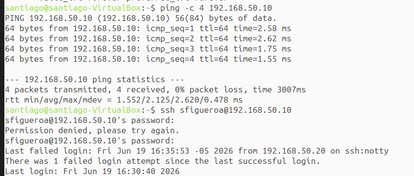
Prueba de ping exitosa y acceso SSH desde VM Gráfica a VM Consola.
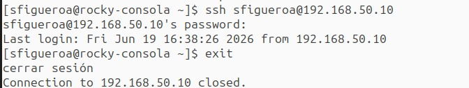
Acceso SSH exitoso y sesión cerrada correctamente.
Configuración de Red Manual
Configuración manual en VM Consola:
- IP fija: 192.168.50.10/24
- Puerta de enlace configurada
- Servidores DNS configurados
- Conexión automática habilitada
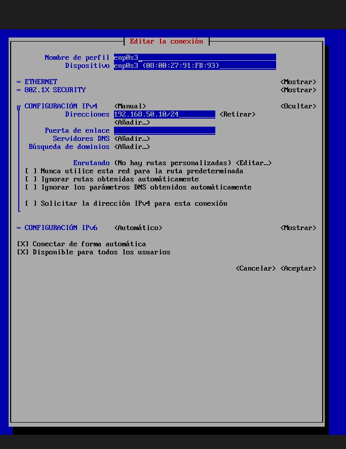
Configuración manual de red en la VM Consola con IP fija 192.168.50.10/24.
Docker Engine en VM Gráfica
Verificación de Docker:
- Docker Engine instalado correctamente
- Versión: 29.6.0
- Imágenes descargadas: hello-world, kicbase
# Verificar versión de Docker
docker --version
# Ver imágenes descargadas
docker images
El comando docker --version confirma la instalación de Docker Engine en la VM Gráfica.
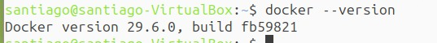
Docker Engine versión 29.6.0 instalado en la VM Gráfica.
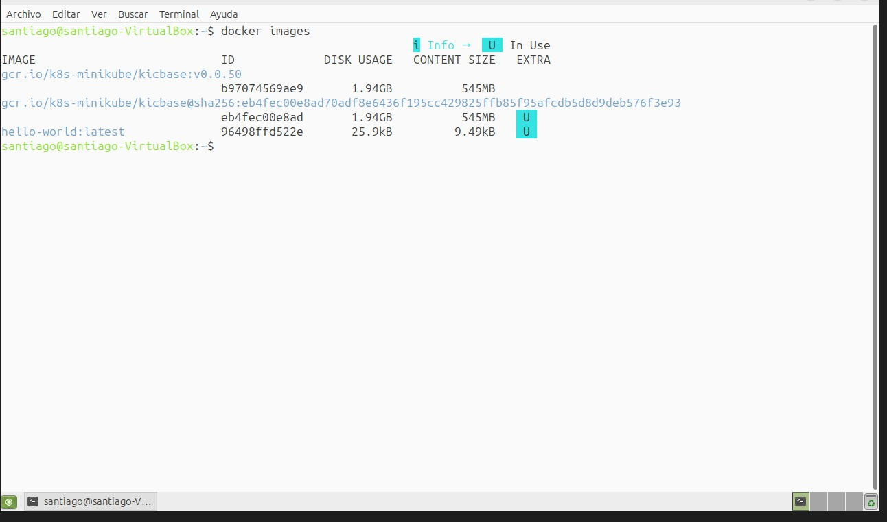
Imágenes Docker descargadas en el sistema.
Resumen Virtualización
- VM Gráfica: Ubuntu MATE 24.04 LTS instalada
- VM Consola: Rocky Linux 9.8 instalada
- Particionamiento manual en ambas VMs (/, swap, /home)
- Red configurada con IPs fijas (192.168.50.10 y 192.168.50.20)
- Conectividad verificada con ping (0% pérdida)
- Acceso SSH funcional desde VM Gráfica a VM Consola
- Docker Engine instalado en VM Gráfica
Componente 2: Contenedores Docker
CompletadoDescripción: Creación de servicios orquestados con docker-compose.yml: Frontend (Nginx) y Backend (Python).
Contenedores en ejecución
docker ps
El comando docker ps lista los contenedores activos: Frontend (Nginx) y Backend (Python).
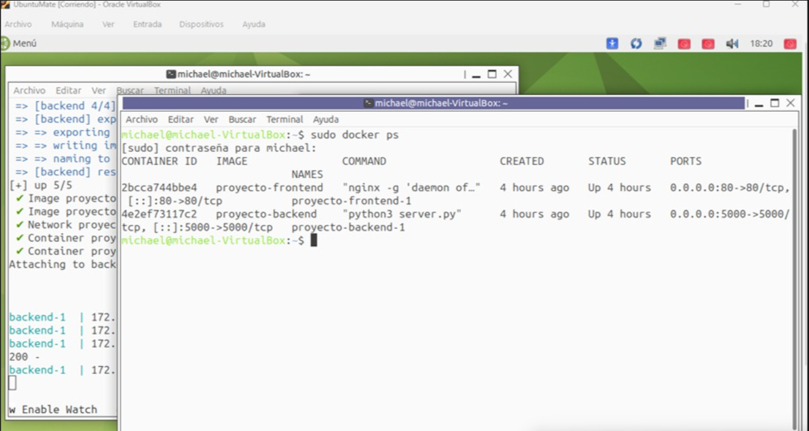
Contenedores ejecutándose correctamente.
Frontend - Nginx funcionando
curl http://localhost
El comando curl http://localhost verifica que el servidor Nginx esté respondiendo correctamente.
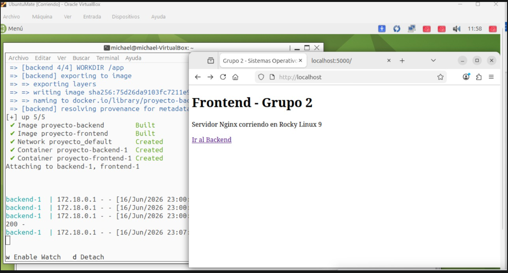
Página de Nginx accesible desde el navegador.
Backend - Python funcionando
curl http://localhost:5000
El comando curl http://localhost:5000 verifica que el servidor Python esté respondiendo en el puerto 5000.
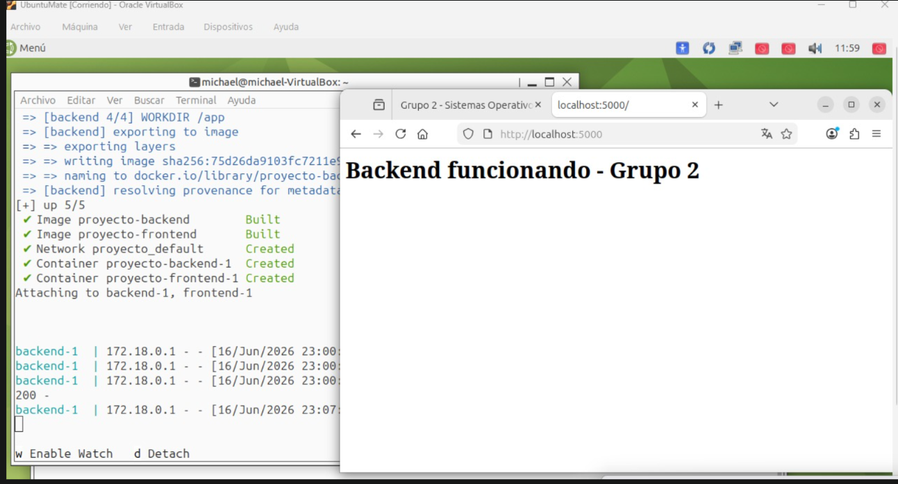
Respuesta del servidor Python en el puerto 5000.
Orquestación con docker-compose.yml
docker compose up -d
El archivo docker-compose.yml orquesta ambos contenedores. El comando docker compose up -d los levanta en segundo plano.
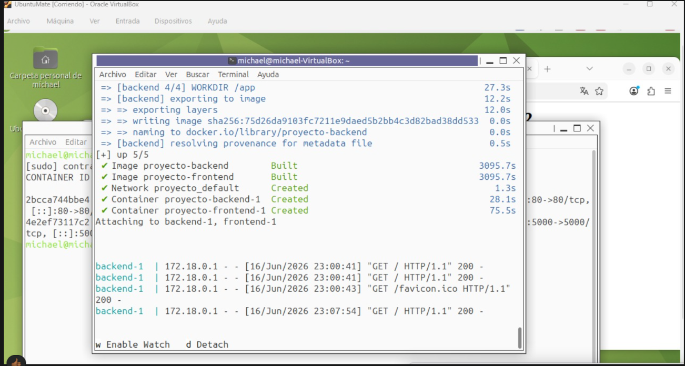
Servicios levantados correctamente con docker-compose.
Resumen Docker
- Frontend Nginx en puerto 80
- Backend Python en puerto 5000
- Orquestación con docker-compose.yml
Componente 3: Kubernetes
CompletadoDescripción: Instalación de Minikube en la VM gráfica. Despliegue de Nginx con manifiestos YAML (Deployment y Service tipo NodePort). Escalado a 3 réplicas.
Aplicar Deployment
kubectl apply -f deployment.yaml
El comando crea el Deployment de Nginx con 2 réplicas iniciales.
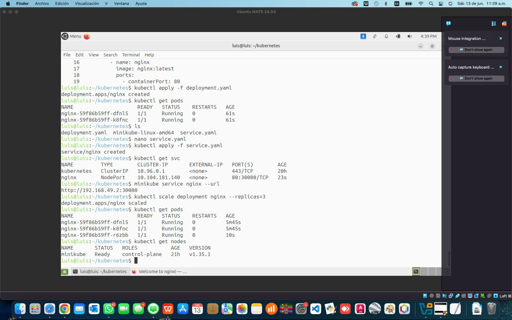
Deployment creado y Pods en ejecución.
Aplicar Service
kubectl apply -f service.yaml
El comando crea un Service tipo NodePort para exponer Nginx externamente.
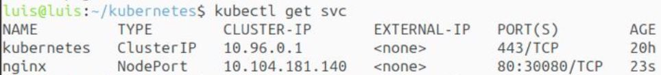
Service NodePort creado en puerto 30080.
Verificar Pods (2 réplicas)
kubectl get pods
El comando muestra los 2 Pods de Nginx ejecutándose correctamente.
✅ 2 Pods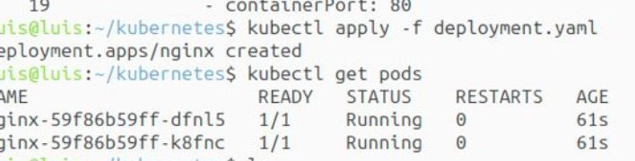
2 Pods de Nginx en estado Running.
Obtener URL de acceso
minikube service nginx --url
El comando genera la URL para acceder al servicio desde el navegador.
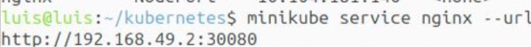
URL generada: http://192.168.49.2:30080
Escalar a 3 réplicas
kubectl scale deployment nginx --replicas=3
El comando escala el Deployment de 2 a 3 réplicas, mejorando la disponibilidad.
⬆️ 3 Pods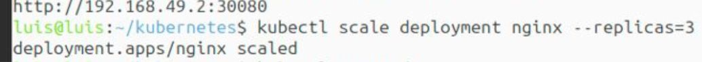
Escalado exitoso a 3 réplicas de Nginx.
Verificar nodos del clúster
kubectl get nodes
El comando muestra el nodo Minikube en estado Ready.
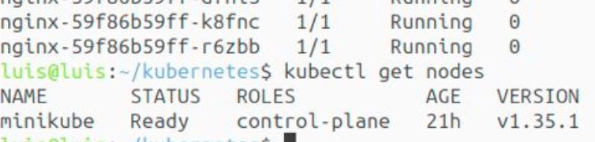
Nodo Minikube listo para ejecutar Pods.
Nginx funcionando
http://192.168.49.2:30080
La página de bienvenida de Nginx confirma que el despliegue fue exitoso.
✅ Servicio funcionando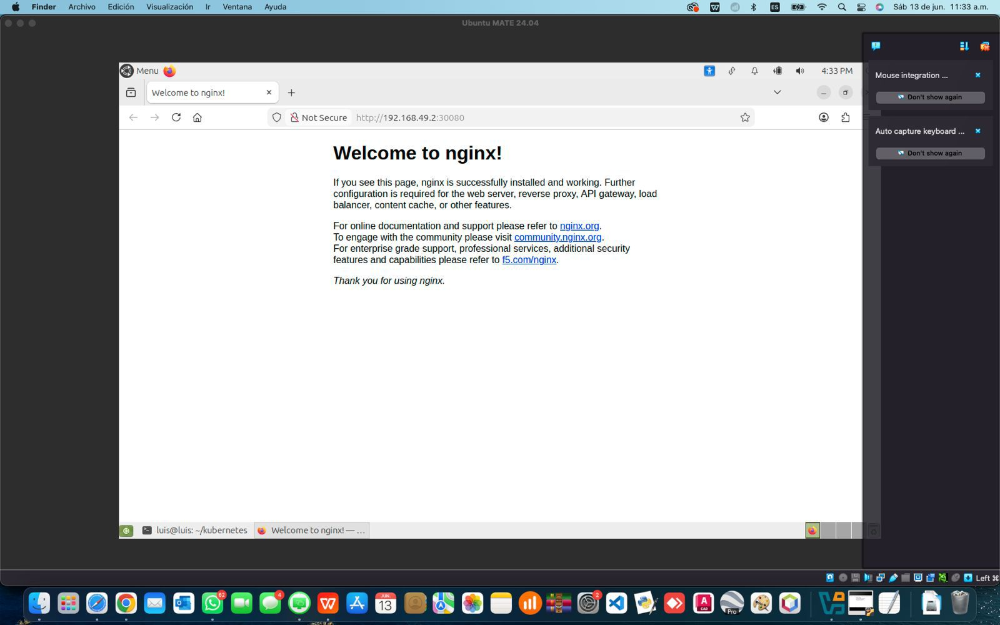
Página de bienvenida de Nginx accesible desde el navegador.
Resumen Kubernetes
- Minikube instalado y funcionando
- Deployment de Nginx con 2 réplicas
- Service NodePort en puerto 30080
- Escalado exitoso a 3 réplicas
Diagrama de Arquitectura
CompletadoDescripción: Representación visual de la infraestructura completa del proyecto.
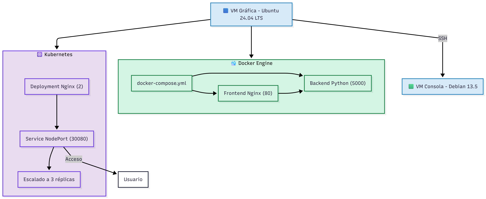
Arquitectura de infraestructura tecnológica del proyecto.
Conclusiones
El desarrollo de este proyecto permitió consolidar los conceptos fundamentales de sistemas operativos y tecnologías de infraestructura moderna. A continuación, las principales reflexiones:
Virtualización
La configuración manual de máquinas virtuales, particionamiento y red interna es una habilidad esencial para administrar entornos de desarrollo y producción.
Contenedores Docker
La creación de imágenes personalizadas y la orquestación con Docker Compose simplifica el despliegue de aplicaciones y la comunicación entre servicios.
Orquestación Kubernetes
El uso de Minikube demuestra cómo las aplicaciones modernas escalan y mantienen alta disponibilidad. Comprender los manifiestos YAML es crítico en Cloud Native.
Documentación
Mantener un sitio web actualizado, con diagramas y un video demostrativo, simula el proceso real de compartir proyectos técnicos en equipo.
Logros del Proyecto
- 2 VMs configuradas con particionamiento manual y SSH
- 2 contenedores Docker orquestados con docker-compose
- Clúster Kubernetes con escalado demostrado
- Sitio web de documentación completo
- Videos demostrativos de YouTube